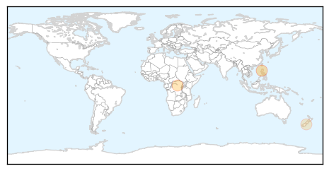

Measles
30-Day Web Trend
0 alerts, 0 warnings

30-Day Twitter Trend
0 alerts, 0 warnings

Article Locations
Article Confidences

Top Articles:
Top Tweets:
-
No tweets found for Nov 15, 2015
Influenza
30-Day Web Trend
0 alerts, 0 warnings

30-Day Twitter Trend
6 alerts, 0 warnings

Article Locations

Article Confidences

Top Articles:
- 0.998
- SCH rules out epidemic threat of seasonal influenza virus
- 0.996
- Andover Public Health Officials Reminding Residents to Get...
- 0.890
- Concerns Rise Over Scientists Tests on SARS 2.0
- 0.885
- Five Myths About the Common Cold
- 0.882
- Kuwait- Seasonal flu infection rate at normal average: MoH - Defense Ministry intends to cut overseas treatment cases
- 0.751
- November 15, 2015 Archives
- 0.751
- November 15, 2015 Archives
- 0.751
- November 14, 2015 Archives
- 0.559
- Surry County Health and Nutrition Center offering free flu shots
Top Tweets:
-
No tweets found for Nov 15, 2015